топ—50
историй мужчин
MaximOnline.ru запускает большой проект историй самых ярких мужчин России. Представители спорта, кино, музыки и бизнеса расскажут свои истории, чтобы помочь ответить на главный вопрос: «Что значит “быть мужчиной” в 2023 году». Большой сериал историй, призванный напомнить и подчеркнуть, что MaximOnline.ru — сайт №1 для мужчин в русскоязычном интернете.

MaximOnline.ru запускает большой проект историй самых ярких мужчин России. Представители спорта, кино, музыки и бизнеса расскажут свои истории, чтобы помочь ответить на главный вопрос: «Что значит “быть мужчиной” в 2023 году». Большой сериал историй, призванный напомнить и подчеркнуть, что MaximOnline.ru — сайт №1 для мужчин в русскоязычном интернете.
Нравится проект? Поделитесь!
Shkulev Media Holding. 2023